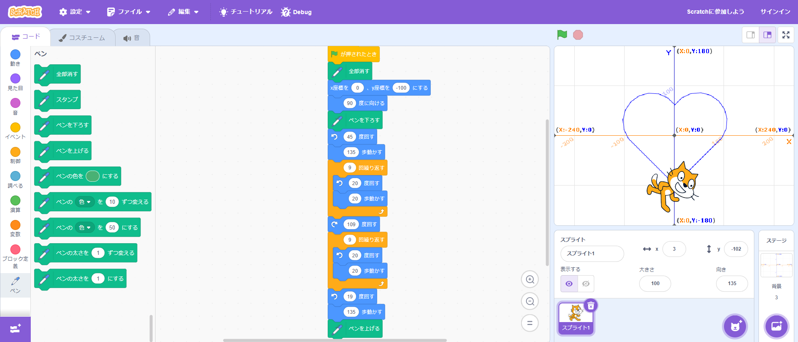

1-1 サイエンスアート

1.内容
スクラッチを使ってハートの形に線を書くプログラムを作成した。旗マークが押されたとき、座標(0,-100)、向き90度からスタートさせ、向きと歩数を調節しながら直線・曲線を描きハートを作成するプログラムとなっている。
2.感想
今まで、ブロックを組み合わせるプログラミングはmakecordを使ってmicro:bitを制御することしかしたことがなかったため、画面内で完結するプログラミングを体験してみて、また違ったおもしろさがあると思った。そして、micro:bitなどのアナログに出力するものに比べてプログラミングの動作確認がしやすく、その点が良いと思った。